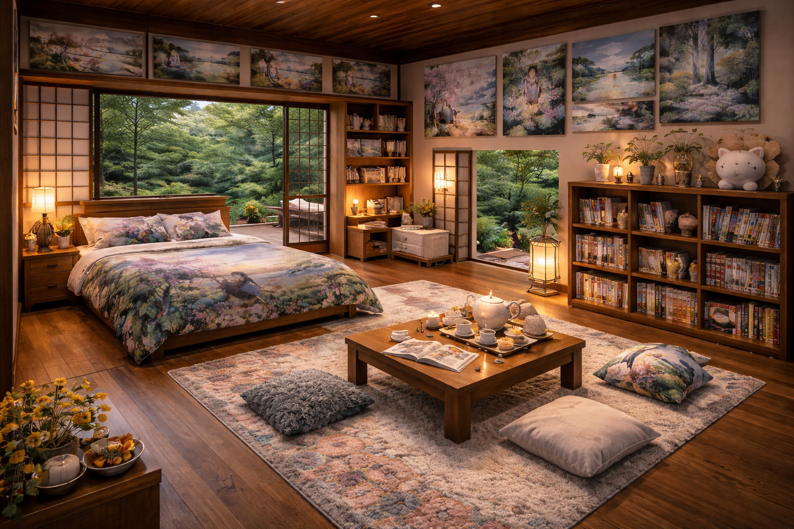

A Sanctuary for the Soul

This bedroom feels calm, warm, and peaceful, like stepping into a quiet retreat surrounded by nature. The floor beneath you is smooth polished wood, slightly cool to the touch, with a large soft rug in the center that feels thick and fluffy under your feet.
To the left side of the room is a low wooden bed with clean edges and a sturdy frame. The mattress looks wide and comfortable, dressed in soft blankets and pillows. The bedding feels cozy and smooth, with a nature-inspired design. On each side of the bed are matching wooden nightstands, each holding a warm glowing lamp that fills the room with gentle light.
Straight ahead, large sliding doors stand open, letting in fresh outdoor air. Beyond them is a patio or balcony area, and outside you would hear leaves rustling and birds nearby. The smell of trees and greenery would drift into the room, making the space feel connected to the outdoors.
Peace and Creativity
To enhance your healing experience, we have provided a full traditional tea set and fresh floral arrangements. The soft, ambient lighting is designed to reduce stress and create a welcoming environment for reading or meditation.
Overall, this room serves as a personal retreat where comfort, creativity, and a love for anime come together in perfect harmony. It is the ideal getaway for those looking to recharge their imagination in a quiet, beautiful setting.